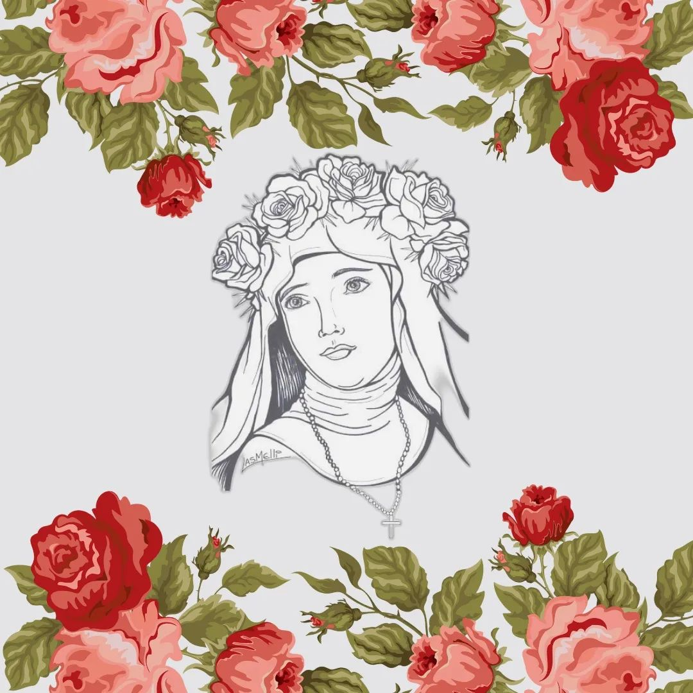
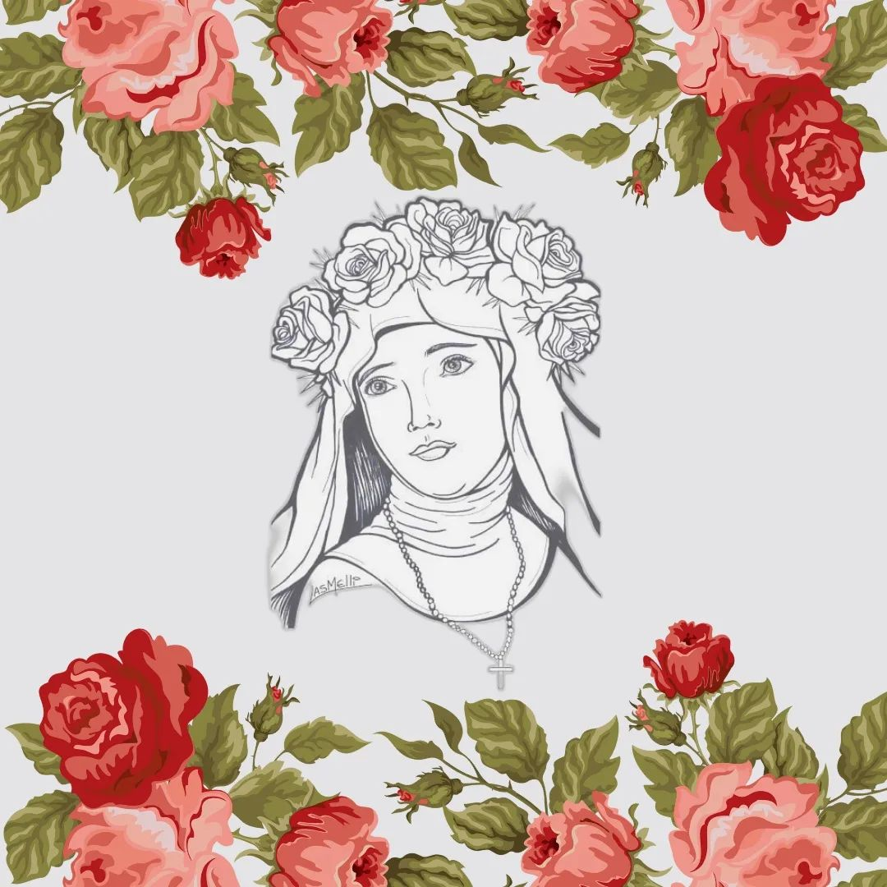

Perfil Biográfico
Isabel Flores de Oliva, que por su belleza recibió popularmente el nombre de "Rosa" al que ella añadió "de Santa María", nació en Lima en 1586. La sociedad de su época, propia de un periodo colonial, esta orientada en varios aspectos por el ideal de tener más. Hay allí familias pudientes, otras de pequeños propietarios y la gran mayoría de campesinos, negros y mulatos, que son tratados como esclavos. La familia de Rosa es de pequeños propietarios. Los padres de Rosa se esfuerzan en darle una seria educación humana además de proporcionarle una sólida formación en la fe.
Lima tiene una comunidad pionera en la evangelización: el convento de Santo Domingo. Allí los seglares pueden participar en la liturgia, reunirse a meditar la Palabra de Dios y colaborar temporalmente en los puestos misionales o "doctrinas".
Santa Rosa de Lima en su interior vive un dilema: por un lado siente vocación de religiosa contemplativa y, por otros, percibe la imperiosa llamada a realizar esta vocación en el interior de su familia, trabajando por el Reino de Dios desde fuera del convento. A sus 20 años encuentra el camino: ser pobre por la fraternidad universal ingresando en la Orden de Predicadores, en su movimiento seglar.
Como dominica seglar da clases a los niños, incluyendo aprendizaje de instrumentos musicales (guitarra, arpa, cítara), cultiva el huerto de casa u trabaja en costura. De esta forma aporta al sostenimiento de su familia amenazada con estrecheces económicas. En aquel hogar la vida es sencilla, pero lo necesario nunca falta.
Participa en la Eucaristía en el Convento de Santo Domingo. Al fondo de su casa construye una cabaña con el fin de asimilar más el Evangelio en la oración; allí entra en comunión con Dios, con los hombres y con la naturaleza. Sólo Dios la va retribuyendo y ella se va forjando como mujer de "contemplación en lo secreto". A esto une una serie de mortificaciones.
Explica en sus escritos que la mortificación es necesaria para ser saciados por el Espíritu de Dios, para vivir orientados por el Espíritu Santo, para renovar la faz de la tierra a partir de uno mismo. Frente a sus prójimos es una mujer comprensiva: disculpa los errores de los demás, perdona las injurias, se empeña en hacer retornar al buen camino a los pecadores, socorre a los enfermos. Se esfuerza en la misericordia y la compasión.
Ella misma querrá salir de Lima como misionera pero diversas circunstancias se lo impiden. Murió a los 31 en Lima el 24 de agosto de 1617. Su cuerpo se venera en la Basílica dominicana de Santo Domingo en Lima. Fue canonizada por Clemente X el 12 de abril de 1671. Desde ese año Toda América Meridional y Filipinas la veneran como patrona.
Semblanza espiritual
Santa Rosa de Lima fue celebrada como la primera flor de santidad de América, insigne por la fragancia de su penitencia y oración. Dotada de brillantes cualidades y dotes de ingenio, ya desde niña se consagra al Señor con voto de virginidad. Siente profunda veneración por Santa Catalina de Siena, con quien se advierte una sorprendente afinidad, por ello decide, en 1606, inscribirse en la Orden Seglar Dominicana para darse más plenamente a la perfección evangélica.
Amante de la soledad dedica gran parte del tiempo a la contemplación deseando también introducir a otros en los arcanos de la "oración secreta", divulgando para ello libros espirituales. Anima a los sacerdotes para que atraigan a todos al amor a la oración. Recluida frecuentemente en la pequeña ermita que se hizo en el huerto de sus padres, abrirá su alma a la obra misionera de la Iglesia con celo ardiente por la salvación de los pecadores y de los "indios". Por ellos desea dar su vida y se entrega a duras penitencias, para ganarlos a Cristo. Durante quince años soportará gran aridez espiritual como crisol purificador. También destaca por sus obras de misericordia con los necesitados y oprimidos.
Santa Rosa de Lima arde en amor a Jesús en la Eucaristía y en honda piedad para con su Madre, cuyo rosario propaga con infatigable celo, estimando que todo cristiano "debe predicarlo con la palabra y tenerlo grabado en el corazón".
Vida y espiritualidad de Santa Rosa de Lima
Fray Julián de Cos OP explica en estos vídeos de forma cercana y visual la vida y la espiritualidad de Santa Rosa de Lima a través de su vida de fe y teniendo en cuenta los usos y costumbres de su tiempo en Lima.
Niñez, primera oración y traslado
En esta primera parte se abordan las etapas determinantes de su niñez y primera oración, así como su pubertad y lo que implicó el traslado de residencia. Santa Rosa de Lima nació en 1586 en la ciudad de Lima y fue la cuarta de catorce hijos. Su padre era arcabucero y pequeño propietario y su madre costurera.
Consagración a Dios, tubercolosis y muerte
En esta segunda parte se aborda su consagración a Dios, la tubercolosis que sufrió y el desposorio místico que experimenta junto con el importante acompañamiento espiritual por parte de destacados cristianos de Lima. Para finalmente abordar su muerte y la posterior canonización.